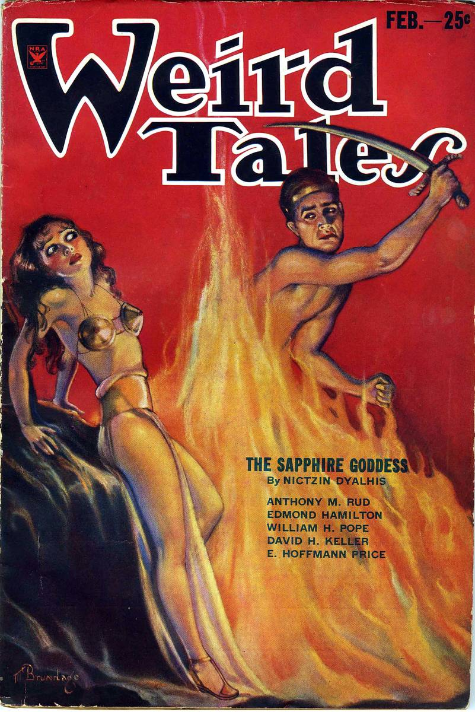
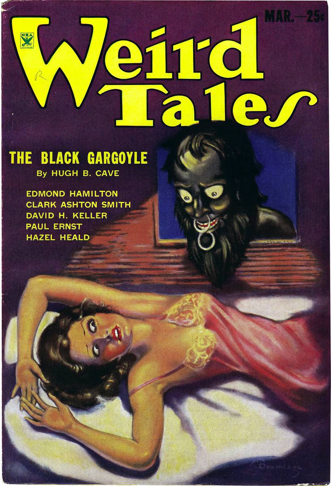
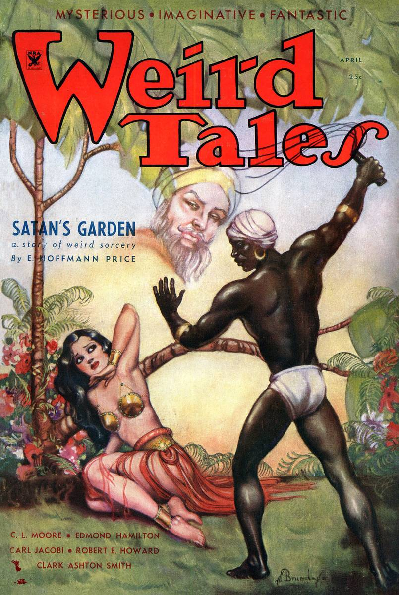
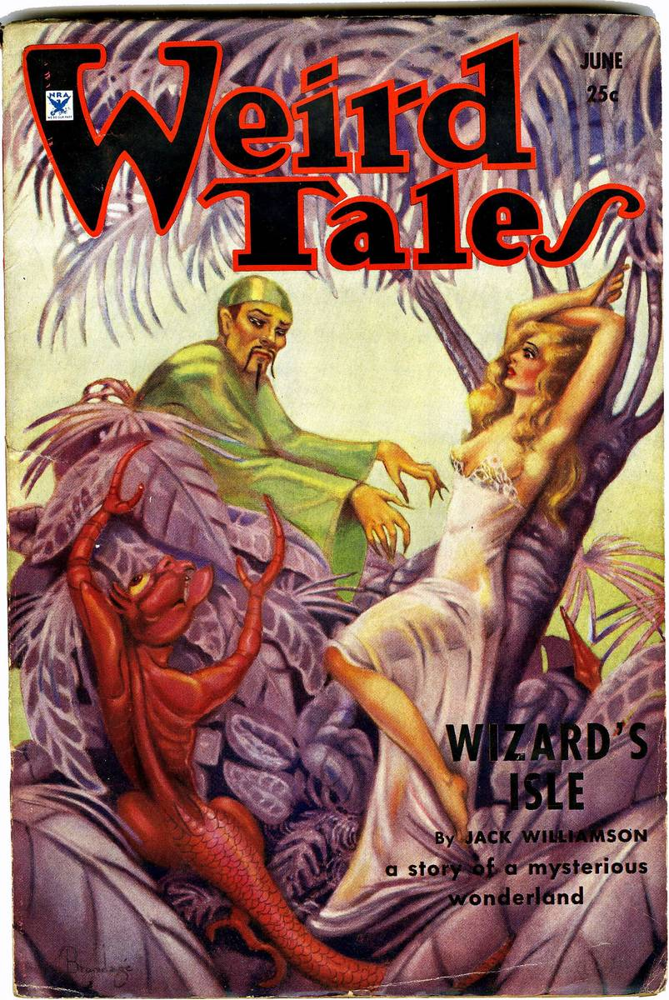
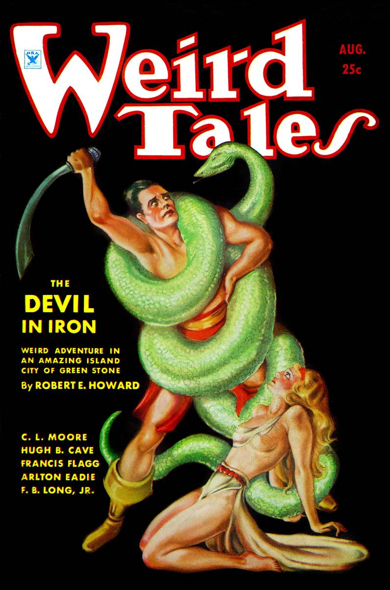
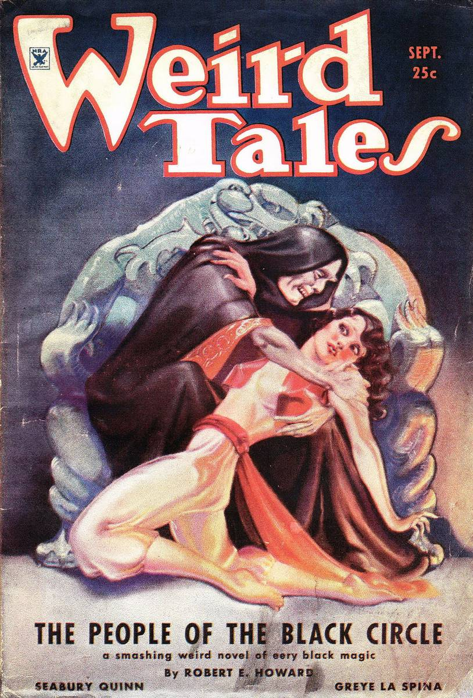
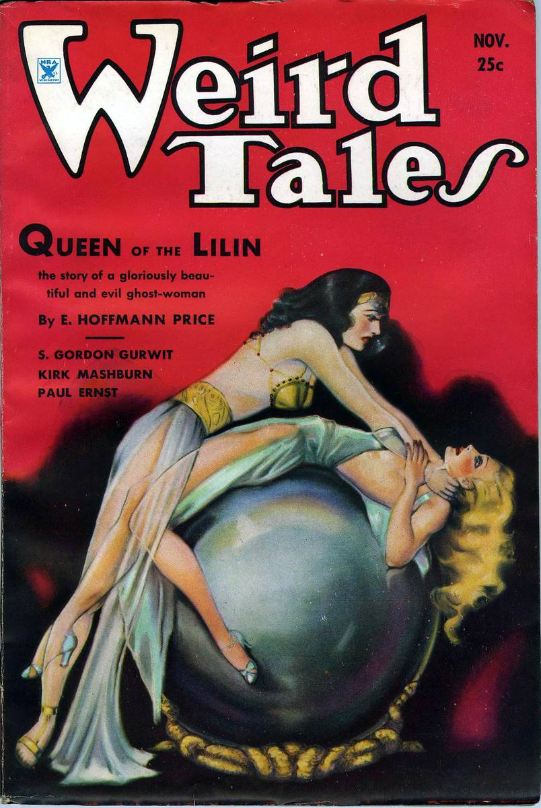
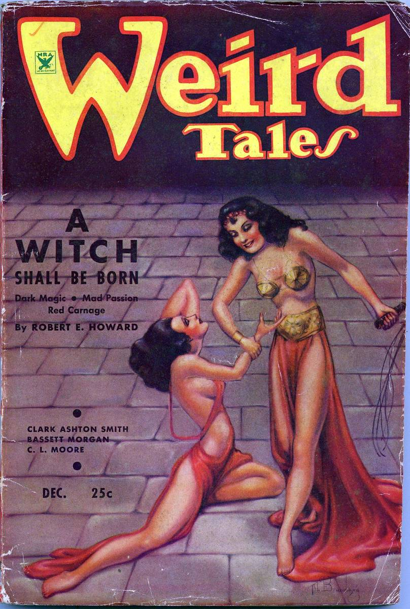
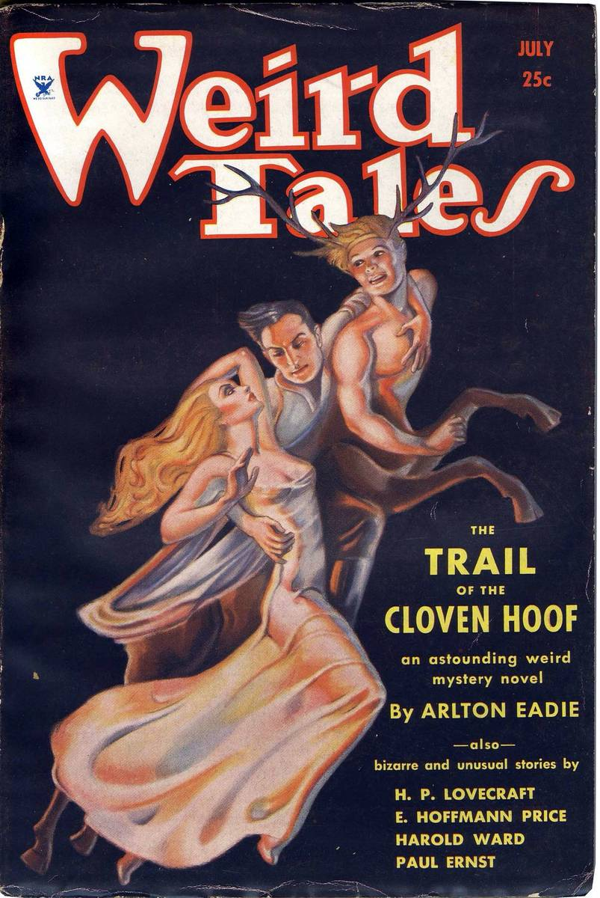
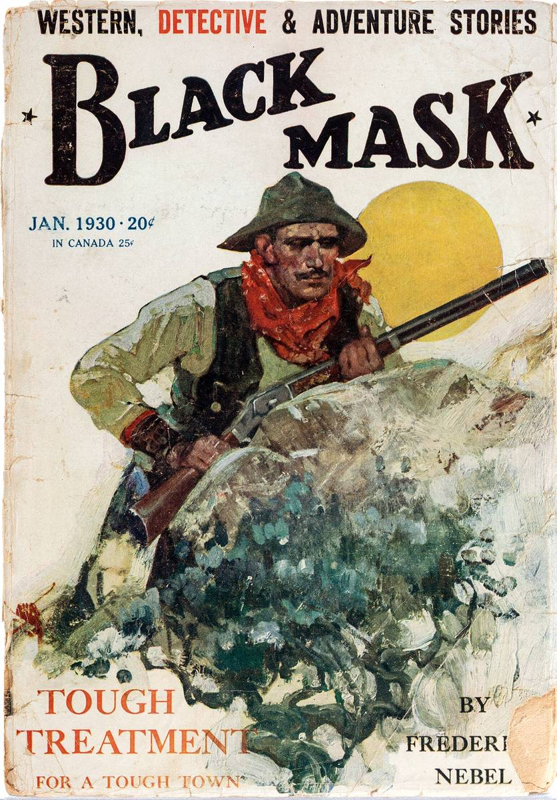

The Dread
Archive
Pulp magazine covers and weird-menace illustrations from the golden age of cheap paper and lurid ink — monsters, skeletons, ghosts, mad scientists, and doomed detectives.
Pulp Terror: 100 Restored Vintage Horror Illustrations
One hundred pulp horror and mystery illustrations from the golden age of the pulps — lurid covers and interior plates, rescued from library scans and restored to look like the day they rolled off the press. Each plate's public-domain status was verified individually: pre-1931 works, or 1931–34 works with documented copyright non-renewal. The provenance record ships with the pack.
- 100 high-resolution JPGs — every image prints at 8×10″ or larger at 300 DPI
- Covers and interiors across horror, mystery, detective, and weird-menace pulps
- Themed PDF index organized by subject — monsters, skeletons, scientists, sleuths
- Provenance CSV: title, artist, date, source, and public-domain basis per plate
The full pack (Personal $16 / Commercial $59) is being shelved and unlocks soon. Meanwhile, the ten free plates below are yours — consider them a warning of what's coming.
Buy links appear here the moment the full pack drops. No dead links, no mailing-list purgatory.









